Hollow Knight é um jogo indie de gênero metroidvania desenvolvido e publicado pela Team Cherry, lançado para PC em 2017 e, posteriormente, para Nintendo Switch, Playstation 4 e Xbox One em 2018. O seu desenvolvimento foi sustentado através de uma campanha no Kickstarter, onde arrecadou cerca de AU$57.000 até o final de 2014.
No jogo, um cavaleiro sem nome explora um reino em ruínas habitado por insetos, desbloqueando habilidades novas que ajudam a explorar e livrar o reino de uma infecção causada por um deus esquecido.
Até o início de 2019, Hollow Knight havia vendido 2,800,000 de cópias no mundo inteiro. Uma sequência chamada Hollow Knight: Silksong foi lançada em 2025.
Hollow Knight é um jogo de ação e aventura em estilo metroidvania 2D que se passa em Hallownest, antigo reino fictício. O jogador controla um silencioso receptáculo enquanto explora um mundo subterrâneo. O cavaleiro utiliza uma arma pontiaguda (chamada de ferrão), tanto em combate quanto para interação com o ambiente.

Na maior parte das áreas do jogo, insetos hostis podem ser encontrados juntos com outras criaturas. Combates geralmente envolvem usar a arma para eliminar os inimigos em curto alcance, mas o jogador eventualmente aprende algumas magias que permitem combate à distância. Inimigos derrotados deixam cair uma moeda chamada Geo. O cavaleiro começa com um número limitado de máscaras (5 máscaras), que representam os pontos de vida do jogo, e pedaços de máscara podem ser coletados para formar máscaras completas que aumentam a vida máxima do jogador.Ao atingir inimigos, o cavaleiro coleta Alma, que é guardada em um Receptáculo de Alma, e pode ser usada para se curar ou para lançar magias. Quando todas as máscaras se quebram, o cavaleiro morre e a Sombra aparece no local, o jogador perde toda Geo que possuía e passa a carregar uma quantidade limitada de Alma, sendo forçado a derrotar a Sombra para poder pegar seus Geos de volta e recuperar o máximo de Alma. O jogo utiliza bancos espalhados pelo reino como pontos de salvamento, onde restauram sua vida por completo e lhe dão a opção de mudar seus amuletos. Inicialmente, o jogador pode utilizar Alma apenas para regenerar vida, mas posteriormente aprende novas magias que também consomem Alma.

O jogo também utiliza Amuletos, onde sua função é de dar habilidades especiais ao jogador. Para equipar e/ou remover amuletos, terá que estar sentado em um banco. Amuletos podem ser obtidos por 2 formas diferentes: encontrando-os no mapa ou comprando eles em certas lojas. O Cavaleiro precisará de uma certa quantidade de encaixes para equipar amuletos, e os encaixes podem também ser encontrados pelo reino de Hallownest ou podem ser comprados em certas lojas (o Cavaleiro começa com 3 encaixes e 0 amuletos). Caso o jogador coloque um ou mais amuletos que excedam o limite de encaixes, ele terá a Sobrecarga, que fará com que ele tome o dobro de dano quando for atacado. O jogo possui um total de 40 amuletos e de 11 encaixes.

Muitas áreas apresentam inimigos mais desafiadores e chefes que o jogador pode derrotar para poder progredir. A derrota de alguns dos chefes recompensa o jogador com novas habilidades. Durante o jogo, o jogador encontra vários personagens não jogáveis (NPCs), com os quais pode interagir. Estes NPCs fornecem informações sobre a história do reino, vendem e compram itens, ou oferecem ajuda e serviços. Alguns itens fornecem habilidades necessárias para avançar na exploração do reino, como pulo duplo e escalada de parede.

Hallownest consiste de várias áreas grandes e interconectadas, com temas únicos. Com sua jogabilidade não linear, Hollow Knight não força o jogador a seguir caminhos específicos, nem exige a exploração do mundo completo, mas possui obstáculos que limitam o acesso a certas áreas, sendo assim obrigatório que o jogador encontre certos chefes ou itens para poder progredir.O jogo também oferece maneiras de se movimentar pelo reino de maneira mais rápida, incluindo uma rede de túneis, elevadores, bondes, e magia.Quando os jogadores entram em uma nova área, eles não possuem acesso ao mapa do local, precisando encontrar um NPC cartógrafo que pode vender uma versão inicial do mapa, que vai sendo progressivamente revelado conforme o jogador avança na exploração da área.
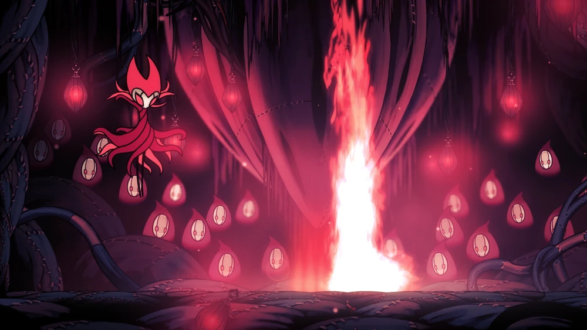
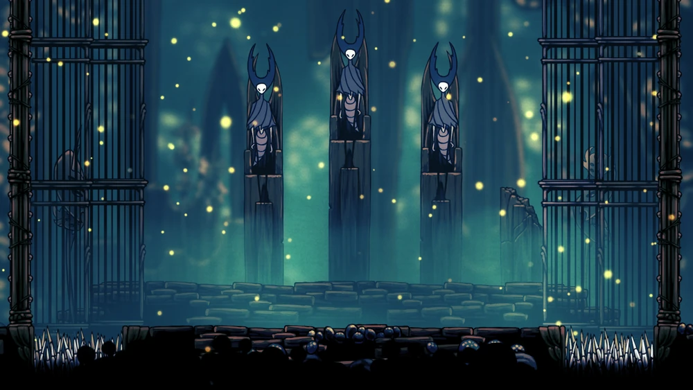
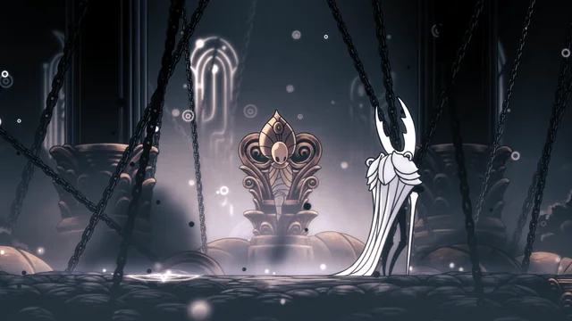

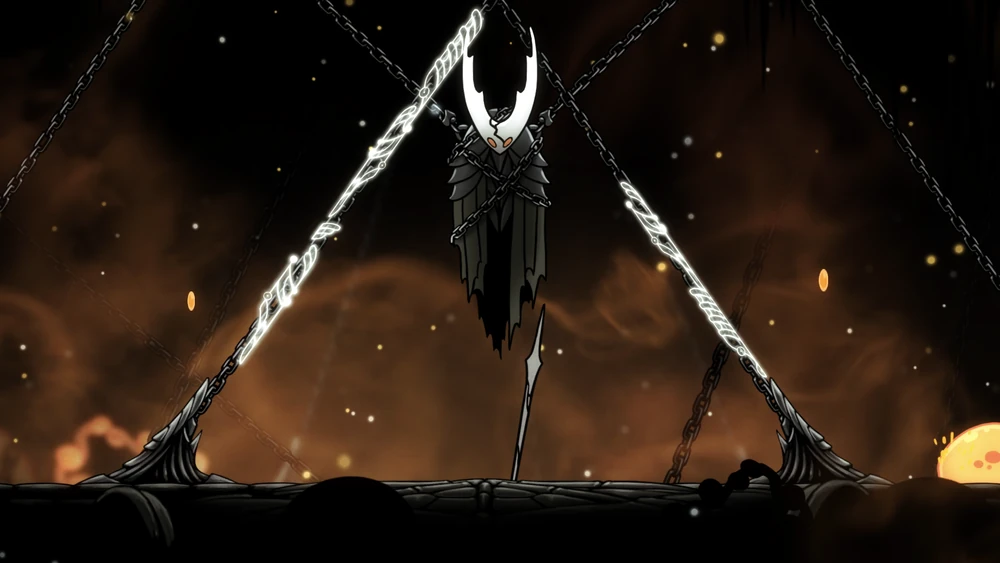
| Área | Descrição | Ponto de Interesse |
|---|---|---|
| Penhascos Uivantes 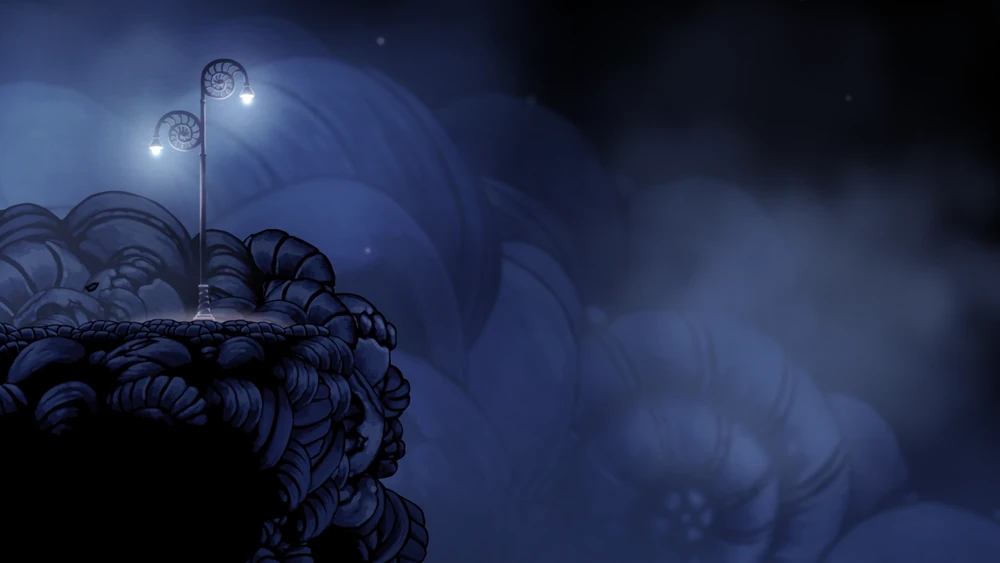 |
"Desfrutando deste ar revigorante? Estamos bem perto da fronteira de Hallownest e as planícies desoladas que o cercam..." - Cornifer |
Mestre do Ferrão Mato |
| Dirtmouth 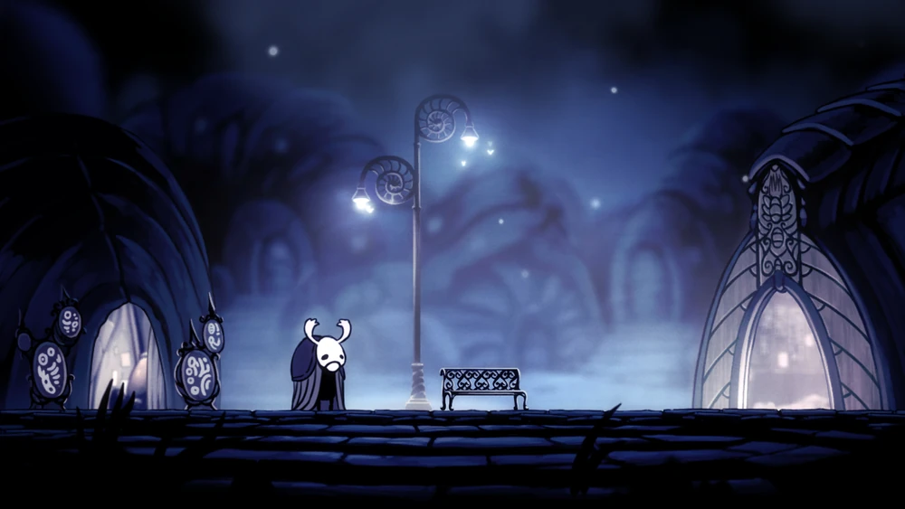 |
"A nossa cidade está sileciosa, como pode ver. Os outros residentes, todos eles desapareceram. Desceram por aquele poço, um por um, para as cavernas abaixo." - Inseto Ancião |
Loja do Sly |
| Encruzilhada Esquecida 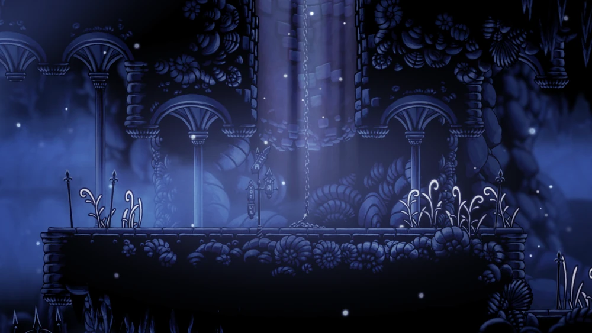 |
"Ainda viaja por estes caminhos fantásticos? Imagine como deviam ser durante os melhores tempos do reino, com muito tráfego e cheio de vida!" - Cornifer |
Templo do Ovo Negro |
| Caminho Verde 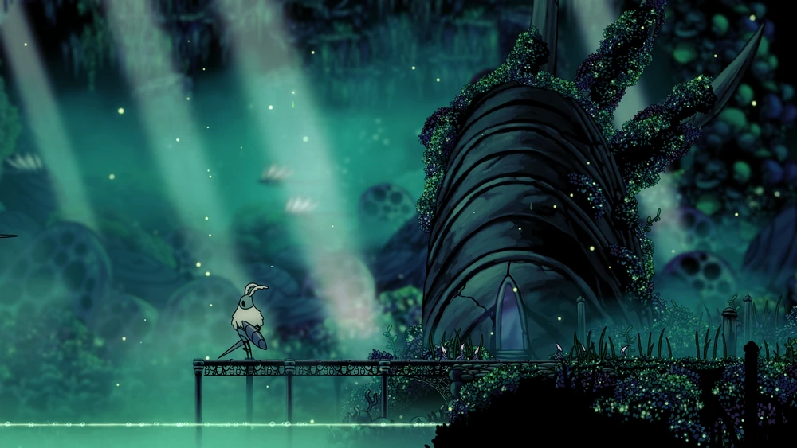 |
"A mente maior, uma vez, sonhou em folhas e fez essas cavernas assim. Em cada arbusto e em toda videira, a mente de Unn se revela para nós." - O Musgoso |
Lago de Unn |
| Cânion da Névoa 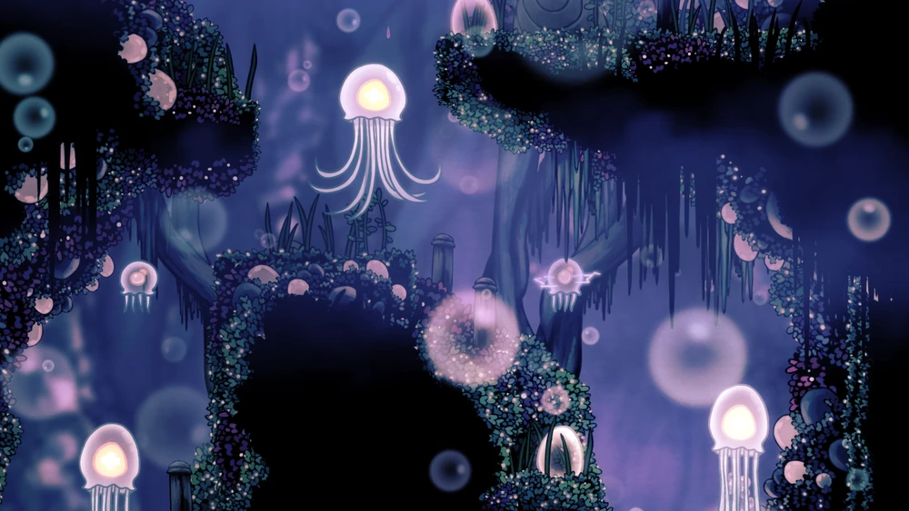 |
As cavernas enevoadas do Cânion da Névoa estão cheias de bolhas e lagos ácidos, com algumas áreas cobertas de espinhos. O solo e as paredes geralmente consistem em rochas ou em uma flora curta e verde. As bolhas da região têm gases em redemoinho presos em seu interior, e as que têm um brilho alaranjado podem explodir quando são estouradas. | Arquivos da Professora (Monomon) |
| Ermos Fúngicos 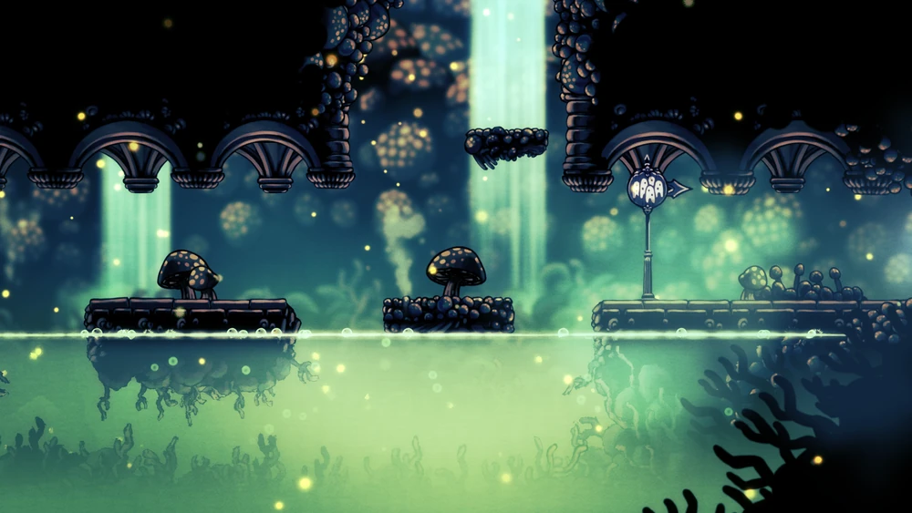 |
As cavernas nocivas dos Ermos Fúngicos estão cobertas por cogumelos de todos os tipos. Além disso, piscinas de ácido são abundantes em toda a área. Os Ermos Fúngicos são habitados pelo Clã dos Cogumelos, um grupo territorial que representa uma ameaça para qualquer um que se aventure nas proximidades.A Tribo Louva-a-Deus faz de sua casa mais adentro da área e são igualmente hostis a estranhos. |
Vila dos Louva Deus |
| Cidade das Lágrimas 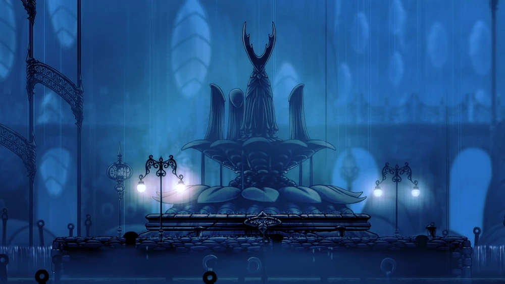 |
No passado, a Cidade das Lágrimas era conhecida como "O Coração de Hallownest". Uma maneira de entrar nela era através do Caminho do Peregrino, uma estrada que começa na Encruzilhada Esquecida e passa por Caminho Verde, Cânion da Névoa e Ermos Fúngicos, terminando no grande portão na parte oeste da Cidade. Os viajantes eram prometidos de que, se alcançassem a capital, todos os seus desejos seriam concedidos e eles poderiam compartilhar da glória da Cidade. Mercadorias de toda Hallownest eram transportadas para a capital, embora nem todas fossem enviadas de volta. |
Santuário das Almas |
| Pico de Cristal 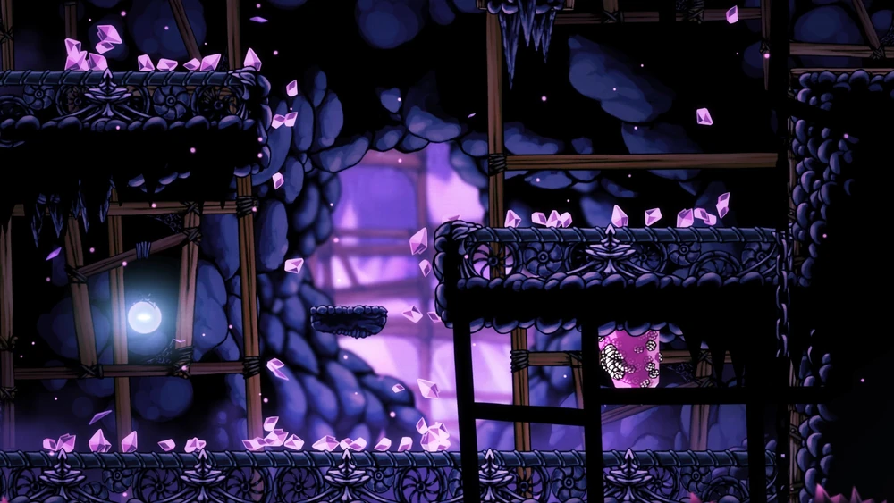 |
"Há algum poder estranho nos cristais que crescem nos picos. Eles cintilam e brilham no escuro, e cada um tem um ponto brilhante que emite um calor abrasador. Eles também cantam, você pode ouvir bem suavemente.." - Caçador |
Coração de Cristal |
| Ninho Profundo 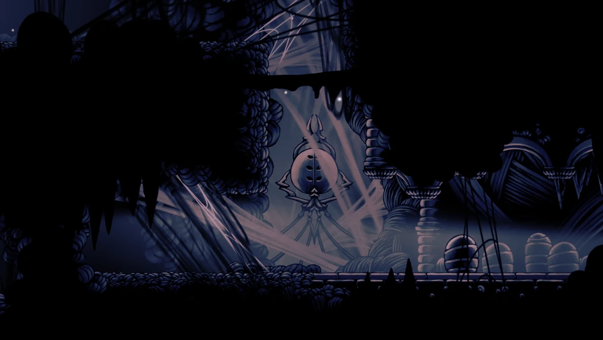 |
O que mais identifica o Ninho Profundo é seu ambiente sombrio. Camadas grossas de teia que cobrem, às vezes, grandes porções do fundo e túneis e passagens retorcidas em forma de labirinto, muitas delas com o brilho fraco de um fungo bioluminescente como única fonte de luz. Ninho Profundo geralmente se encontra em um estágio muito primário de desenvolvimento, sem o nível geral de arquitetura visto no restante de Hallownest. |
Vila Distante |
| Bacia Antiga 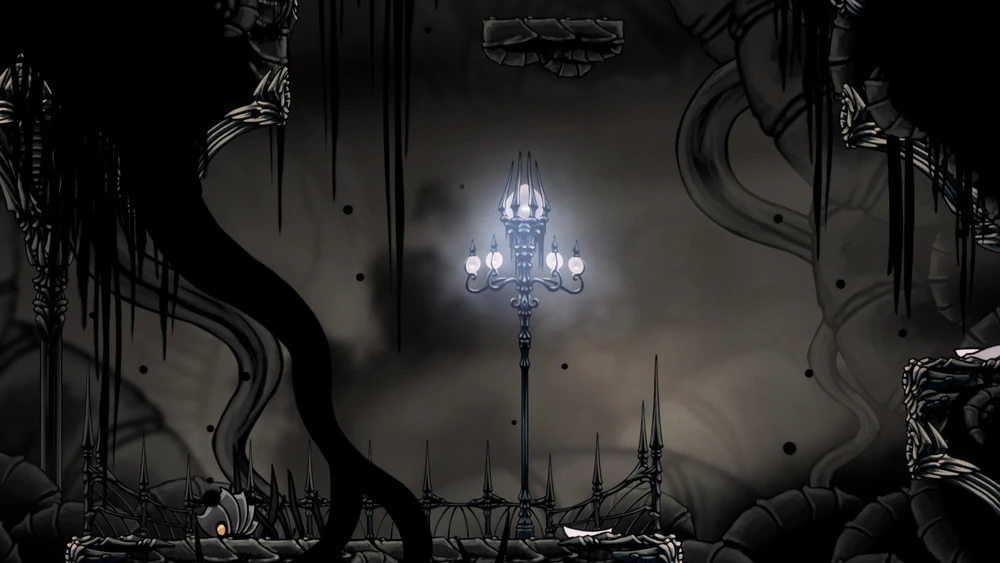 |
"Você sabia que as cavernas continuam mesmo abaixo da capital? Poucos se arriscaram a ir tão profundamente, então tenho poucos detalhes. Aqueles que voltaram, contaram sobre estruturas e estradas impossivelmente antigas, como se as rochas possuíssem vontade própria" - Inseto Ancião |
Ruínas do Palácio Branco |
| Borda do Reino 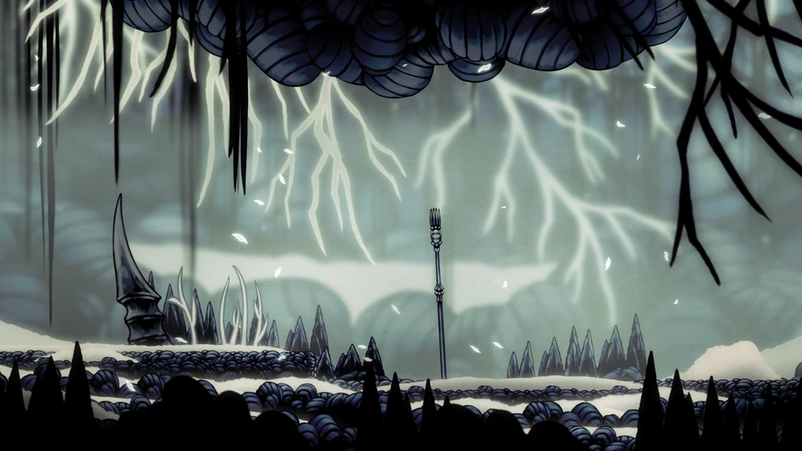 |
"
Esse lugar de cinzas é tumulo do Wyrm. Dizem que veio aqui para morrer. Mas o que é morte para aquele ser antigo? Eu acho que é mais como uma transformação.
Este reino falhado é produto do ser nascido daquele evento." - Bardoon |
Marca do Rei |
| Jardins da Rainha 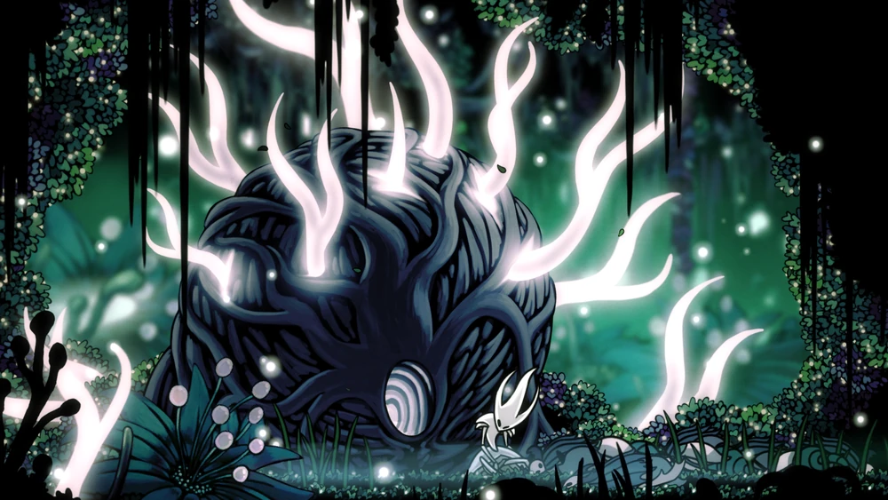 |
Os jardins estão repletos de vegetação crescida, trepadeiras espinhosas e estufas negligenciadas. Lanternas iluminam a área. Além das estruturas de Hallownest e das plantas floridas, surgiram tendas nos Jardins, abrigando Os Traidores Louva-a-Deus. | Refúgio da Dama Branca |